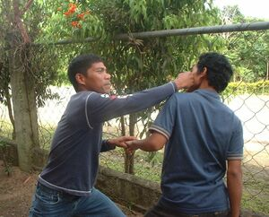

sumbag 
/sumbag/
v_rt.
“punch”
Fr. Ceb. sumbag
v.
for someone (egsumbag, migsumbag/insumbag, agent, eg><ø-) to punch someone else (egsumbahen, insumbag/migsumbag/pigsumbag, patient, eg><en-)
Mareet ka iglukes te ayè ku su egsumbag sikandin te asawa rin ke egkewubug sikandin.
My aunt's husband is bad because he will punch her when he drunk.
cf. suntuk
Eng. punch; hit
Online dict status: -
Usage level: L
v.
for someone (egpanumbag, migpanumbag/impanumabag, agent, eg><ø-paN-) to punch up someone
Mareet ne etew si Danilu su egpanumbag dè due te etew minsan warè salè.
Danilu is bad because he will punch up someone even without fault.
Eng. punch up
Online dict status: -
Usage level: L
v.
for two people (egpasumbahey, migpasumbahey/impasumbahey, egpA><ey-) to punch each other
Nenasamuk ka me etew diyè te palingki su egpasumbahey man-e mulè ka nenewubug.
The people of the market got troubled because the drunkards punched each other.
Eng. punch; box; quarrel; fight; scrap; argue
Online dict status: -
Usage level: L
Updated by: RJH,QDL
Last updated: 26/Jan/2010
This page last updated: 19/May/2012
Copyright © 2009-2010, Matigsalug Language Christian Association, Inc